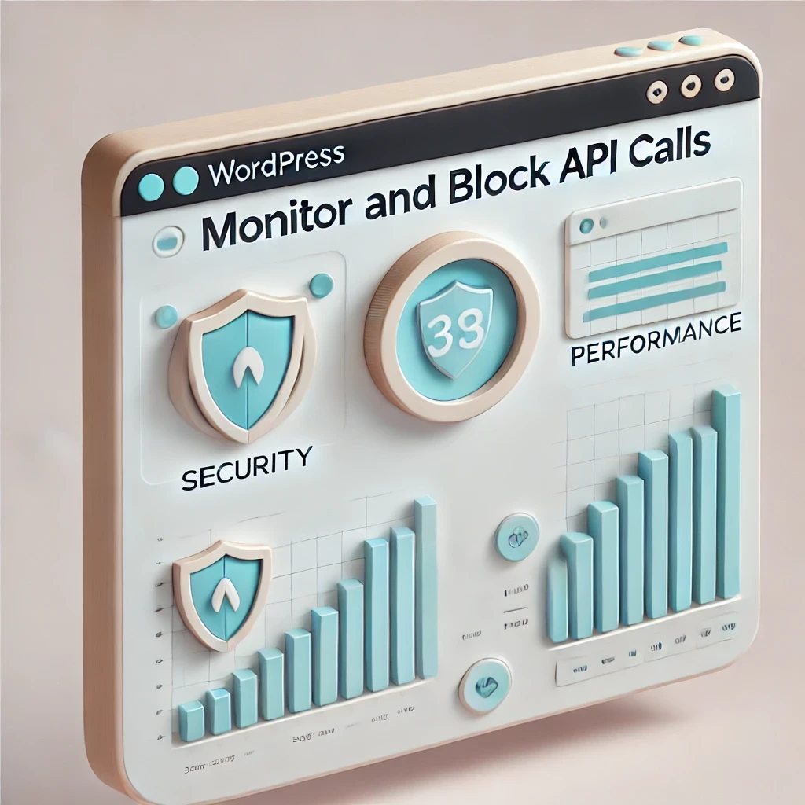
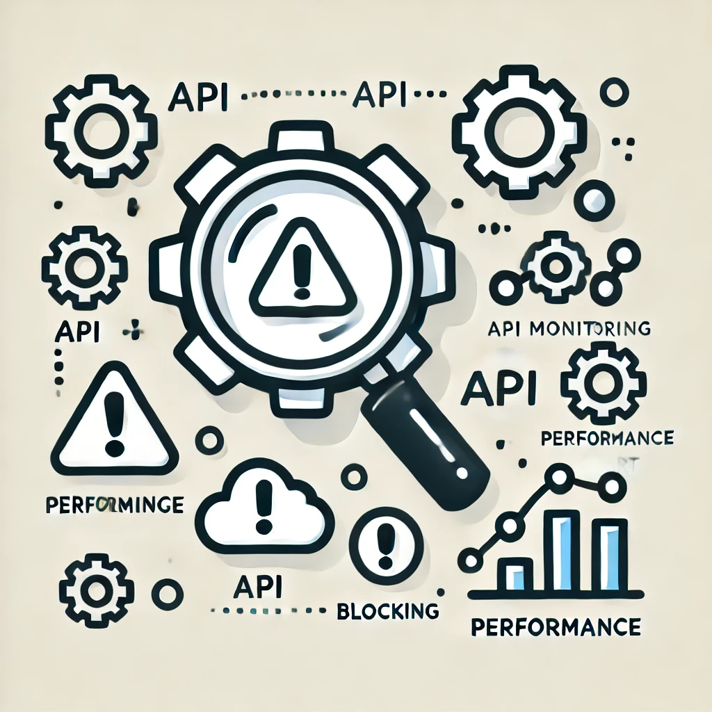
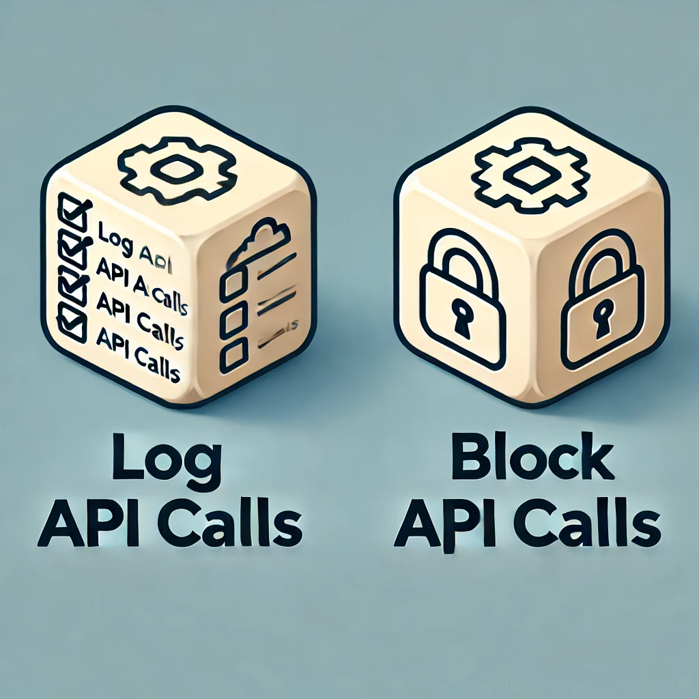
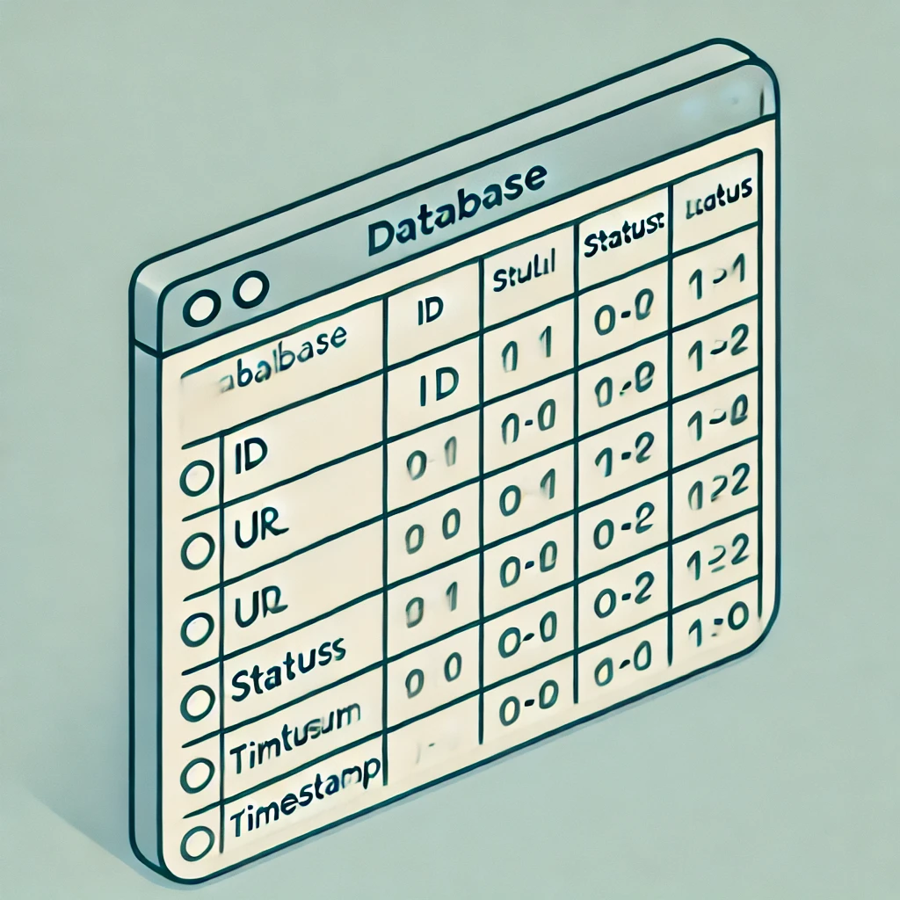
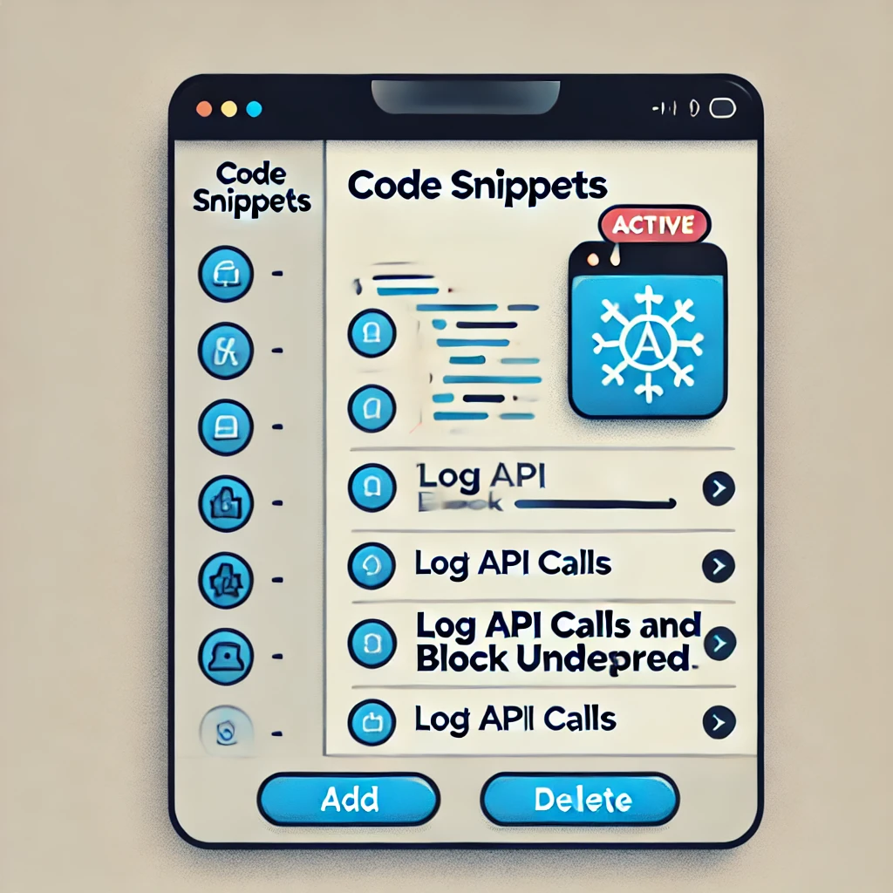
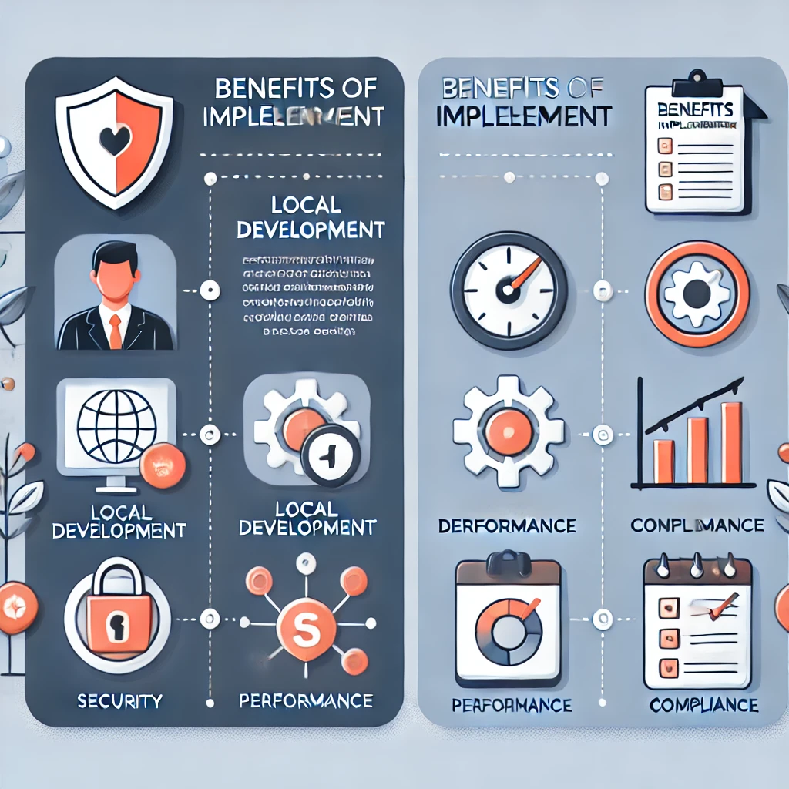
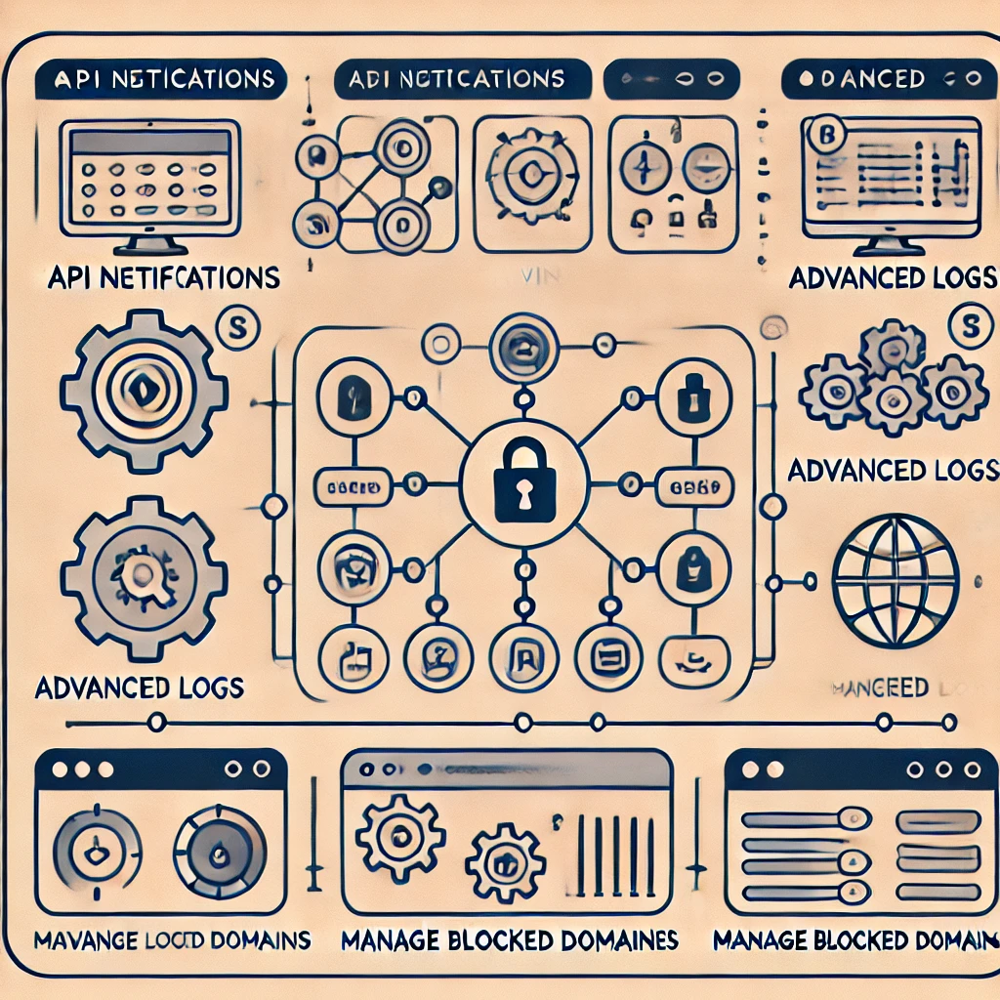
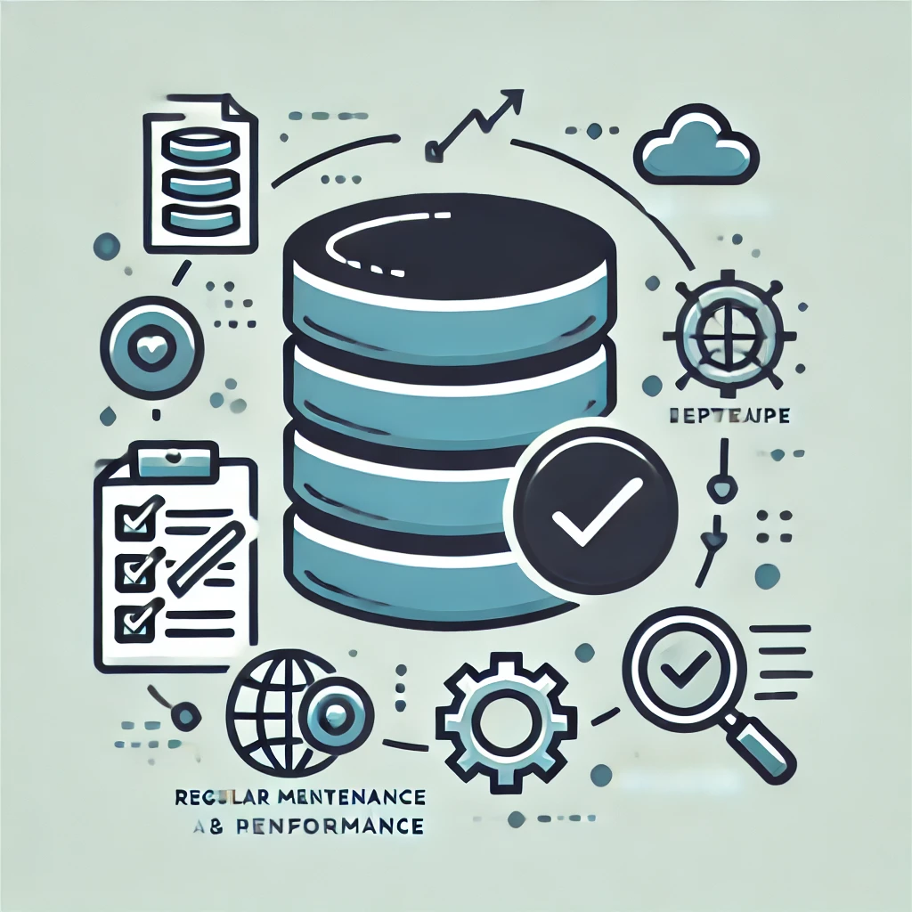

Monitora e Blocca le Chiamate API in WordPress per Migliorare Sicurezza e Performance
Una guida per sviluppatori e gestori di siti WordPress

Perché Monitorare le Chiamate API?
Le chiamate API non monitorate possono rallentare il sito e compromettere la sicurezza.
- Riduzione dei rischi di accessi indesiderati
- Maggiore controllo e analisi delle chiamate API
- Performance ottimizzata

Obiettivi dell'Implementazione
Loggare tutte le chiamate API
Bloccare le chiamate verso domini indesiderati
Il nostro obiettivo è creare un sistema che registri ogni chiamata API e blocchi quelle provenienti da domini che non vogliamo consentire.

Codice per Intercettare e Bloccare le Chiamate API
// Esempio di codice per il filtro pre_http_request
add_filter('pre_http_request', 'intercetta_e_blocca_api', 10, 3);
function intercetta_e_blocca_api($pre, $args, $url) {
// Logica per bloccare domini indesiderati e loggare le chiamate
}
Creazione della Tabella api_logs
Struttura della tabella api_logs:
idurlstatus (allowed/blocked)timestamp

Utilizzo del Plugin Code Snippets
Inserire, modificare e attivare gli snippet di codice direttamente dal backend di WordPress.

Benefici dell’Implementazione
Sviluppo Locale
- Debugging avanzato
- Ottimizzazione delle chiamate API
Produzione
- Maggiore sicurezza
- Performance ottimizzate
- Compliance normativa

Estensioni e Miglioramenti Possibili
- Interfaccia di amministrazione per i log
- Notifiche in tempo reale per le chiamate bloccate
- Configurazione dinamica dei domini bloccati

Consigli Finali per la Sicurezza e Performance
- Eseguire backup regolari del database
- Monitorare l’impatto sul database
- Ottimizzare la tabella di logging per performance

Ottieni il Controllo delle Chiamate API sul Tuo Sito WordPress!
Leggi l’articolo completo per i dettagli tecnici e il codice!
Visita l'articolo